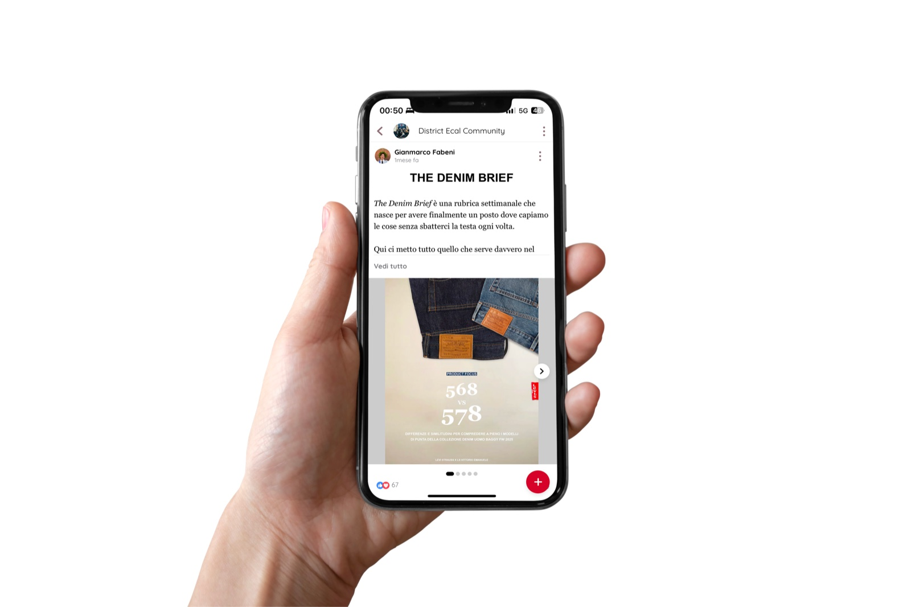

Editorial design
Publications, magazines and editorial systems where typography, imagery and design choices shape how content is read and experienced.
I research, edit and shape ideas into publications, visual systems and content — exploring culture, design and sustainability.
Publications, magazines and editorial systems where typography, imagery and design choices shape how content is read and experienced.
Visual communication systems that turn ideas into clear, coherent and recognisable visual languages.
Research and analysis used to understand context and guide informed design decisions.

An internal communication project connecting retail data, product knowledge and store culture through editorial content.